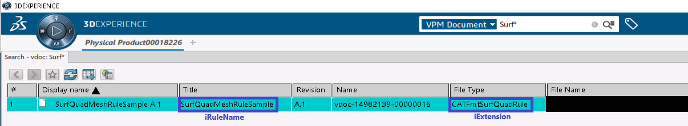

Mesh Parts and Their Attributes |
| Technical Article |
AbstractThe following reference article describes the different types of mesh parts, their attributes and usage. This paper explains two types of mesh parts:
This paper describes also how to access to: |
Mesh Part creation is managed the Add method of the mesh part collection object.
A "late type" must be given to indicate which type of mesh part is to be created:
| Mesh part | Late type |
|---|---|
| Beam | CATFmtBeamRulesMesher |
| Coating 2D | CATFmtCoating2DMesher |
| Extrusion Offset | CATFmtExtrusionOffsetMesher |
| Extrusion Rotation | CATFmtExtrusionRotationMesher |
| Extrusion Spine | CATFmtExtrusionSpineMesher |
| Extrusion Symmetry | CATFmtExtrusionSymmetryMesher |
| Extrusion Translation | CATFmtExtrusionTranslationMesher |
| Hex-Dominant Mesher | CATFmtHexMesher |
| Octree 2D | CATFmtOctree2DRulesMesher |
| Octree 3D | CATFmtOctree3DRulesMesher |
| Offset | CATFmtOffsetMesher |
| Partition Hex Mesher | CATFmtPartitionHexMesher |
| Quadrangle Surface | CATFmtSurfQuadMesher |
| Rotation | CATFmtRotationMesher |
| Sweep 3D | CATFmtSweep3DMesher |
| Symmetry | CATFmtSymmetryMesher |
| Tetrahedron | CATFmt3DRulesMesher |
| Tetrahedron Filler | CATFmtGHS3DMesher |
| Translation | CATFmtTranslationMesher |
| Triangle Surface | CATFmtSurfTriaMesher |
Global attributes is managed using SimMeshPart object:
iAttribute is the global attribute's name and iSetType is the type of specification:
Local topology specifications are created by the Add method of the SimTopologySpecifications object.
The Item and the Remove methods work with an index which is the position
of the specification in the collection. The position index starts from 1.
The support of the local topology specification is managed by the SimLinkAccess object:
The specification values are managed by the following methods:
Local mesh specifications are created by the Add method of the SimMeshSpecifications object.
The Item and the Remove methods work with an index which is the position
of the specification in the collection. The position index starts from 1.
The support of the local topology specification is managed by the SimLinkAccess object:
The specification values are managed by the following methods:
A Meshing Rule can be used to manage the mesh part parameters by using SetRule method of the SimMeshPart object.
 |
The mesh quality analysis can be exported from the SimMeshPart or SimFemRoot objects.
If the export is called on a SimMeshPart, the mesh quality analysis will be done on the mesh part only.
If the export is called on the SimFemRoot, the mesh quality analysis will be done on the complete mesh set.
The mesh quality analysis can be exported by using the CreateCSVFile method of the SimMeshQuality object. This object can be retrieved by calling
GetItem("SimMeshQuality") method on the SimMeshPart or SimFemRoot objects.
| Version: 1 [Oct 2014] | Document created |